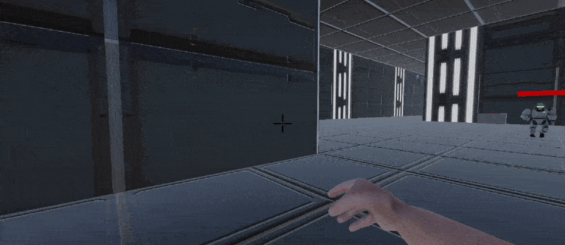
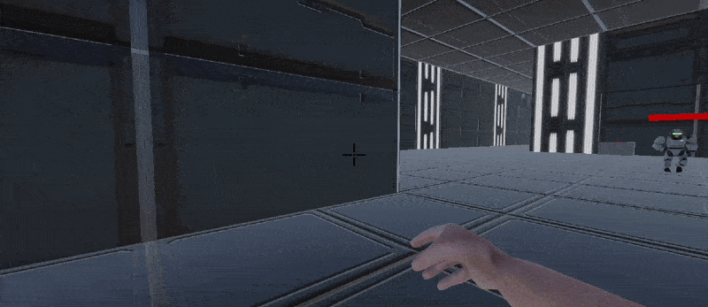

Hot Hands
About
Hot Hands was made for an 8 week passion school project. It was made with me and another student from my course. It is an FPS game where you catch bullets instead you having a gun yourself. We enjoyed working on this game so much that we want to work on it even after the project has ended.
Project Info
 Team Size: 2
Team Size: 2
 Time Frame: 8 weeks
Time Frame: 8 weeks
 Engine: Unity
Engine: Unity
Introduction
This game contaiend a lot of new, useful and interesting learning opportunities for me. From new design patterns to making animations inside Unity. The core mechanic of the game was catching bullets and throwing these back at the enemies to fight back. And to make it more interesting and fun I added enhancements that can be applied to the bullet in hand to make the bullet also stronger. There are currently 2 types of enemies. One ranged and one melee. You can easily take out ranged enemies with their bullets but you first have to prioritize neutralizing melee enemies first because you cannot get any bullets from them to fight back properly. The game can be played and the trailer viewed here.
 

Gameplay GIF's from Hot Hands.
What I learned
I learned many new stuff. New design patterns for C#, how to make a 3D game in Unity in general, making levels with ProBuilder and making animations in Unity are a few of them. This was truly a good opprtunity to learn and expand my knowledge about game development.